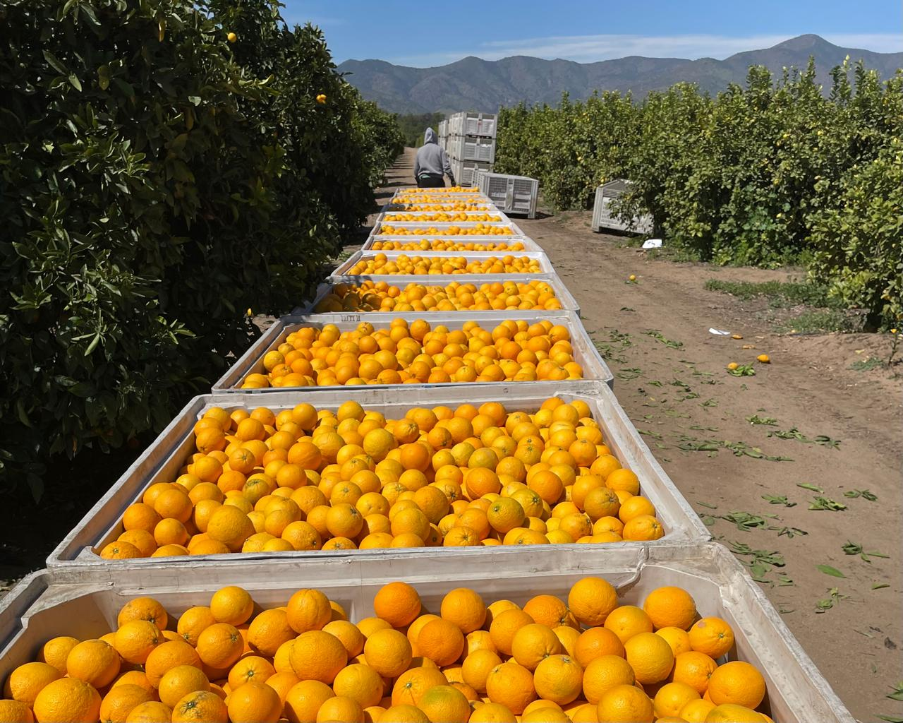
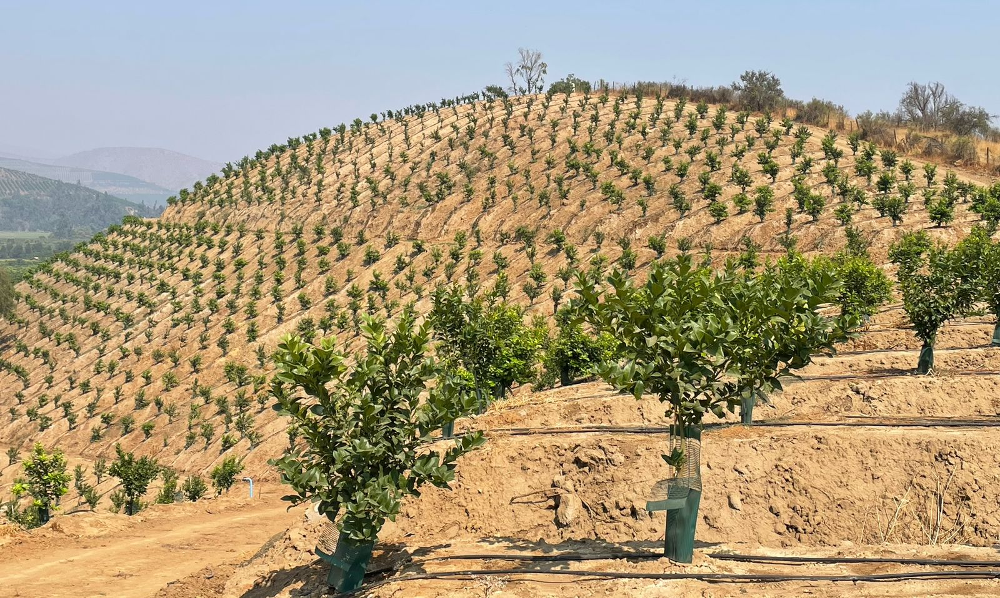

Mallarauco • Chile
Sobre Nosotros
Calidad, trazabilidad y sustentabilidad. Conoce en breves bloques quiénes somos, el equipo y nuestras instalaciones.
Calidad, trazabilidad y sustentabilidad. Conoce en breves bloques quiénes somos, el equipo y nuestras instalaciones.
Calidad, trazabilidad y sustentabilidad. Conoce en breves bloques quiénes somos, el equipo y nuestras instalaciones.